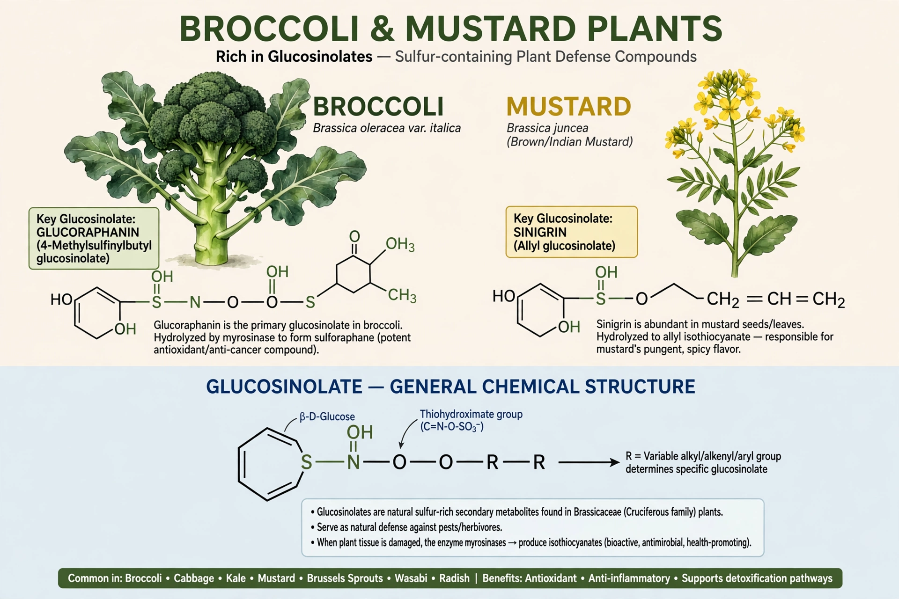

Glucosinolates are natural components of many pungent plants such as mustard, cabbage, broccoli, cauliflower, kale, and horseradish. They are secondary metabolites that give cruciferous vegetables their sharp taste and serve as plant defences against pests.
Each glucosinolate contains a β-thioglucose group, a sulfonated oxime, and a variable side chain derived from an amino acid. Around 130 different glucosinolates are known.
When plant tissue is damaged, the enzyme myrosinase hydrolyses glucosinolates to products including isothiocyanates such as sulforaphane, studied for possible health effects. Excess intake from fodder can be goitrogenic in livestock.
Glucosinolate-rich plants are used in biofumigation of soils, and low-glucosinolate breeding produced modern canola from rapeseed.